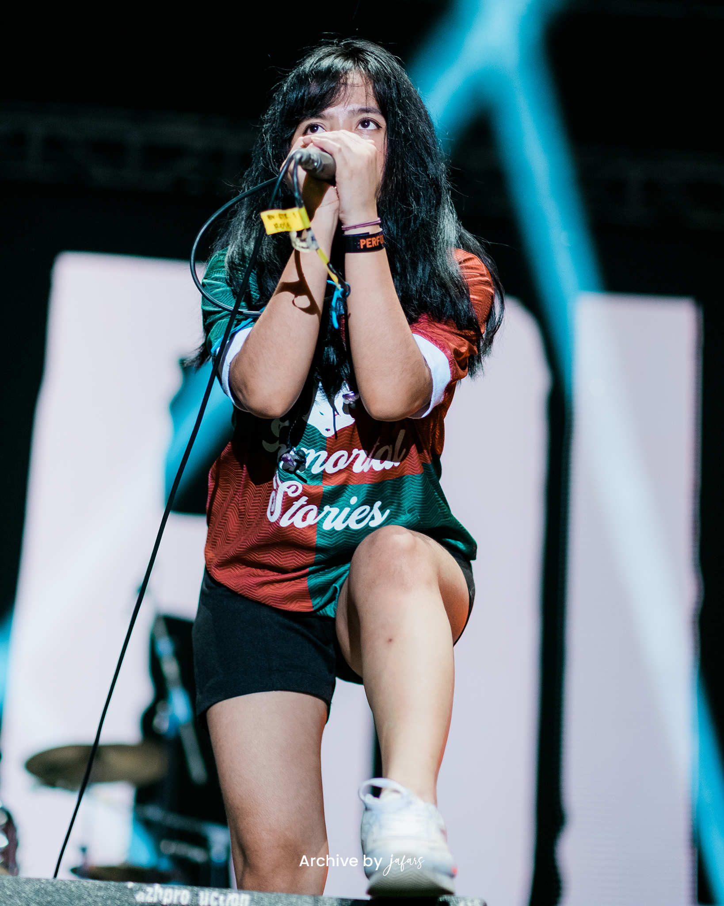

Biodata Savira Razak

Savira Salsabilla, yang lebih dikenal dengan nama panggung Savira Razak (lahir pada 16 Mei 1992), merupakan mantan vokalis dari band terkenal Killing Me Inside. Sebelum terjun ke dunia musik, ia juga dikenal sebagai pembawa acara televisi. Kariernya dimulai ketika ia berhasil meraih posisi finalis dalam ajang pencarian bakat Mamamia 2007, yang membuka jalan baginya untuk mengejar dunia hiburan dan musik.
Savira Razak dikenal sebagai vokalis utama Killing Me Inside (menggantikan Onadio Leonardo), sebuah band yang terkenal di Indonesia dengan genre musik post-hardcore dan metalcore. Berikut adalah rangkuman tentang karier Savira Razak di band Killing Me Inside
Biodata
- Nama Lengkap: Savira Razak
- Tempat, Tanggal Lahir: Jakarta, 16 Mei 1992
- Posisi di Band: Vokalis
- Genre Musik: Rock, Indie, Alternative
- Instagram: savira_razak
- Twitter: @savira_razak
Bersama Vira, Killing Me Inside langsung mencatatkan kesuksesan besar dengan merilis album terbarunya, 'Rebirth: A New Beginning'. Album keempat ini menyimpan berbagai kisah menarik yang tak kalah memukau di balik setiap lagu yang ada..
Akhir karir Savira di KILMS
Savira Razak akhirnya memutuskan untuk keluar dari Killing Me Inside pada sekitar tahun 2016. Keputusan tersebut diambil karena perbedaan visi musik dan perjalanan pribadi. Meskipun begitu, kontribusinya selama masa bergabung dengan band ini tetap dihargai oleh para penggemar dan industri musik Indonesia. Lanjutkan Karier di Luar Band: Setelah meninggalkan Killing Me Inside, Savira Razak melanjutkan karier musiknya dengan fokus pada proyek solo, serta berkontribusi di beberapa proyek musik lainnya. Selain itu, ia juga sempat terlibat dalam berbagai kegiatan hiburan, termasuk menjadi pembawa acara televisi.